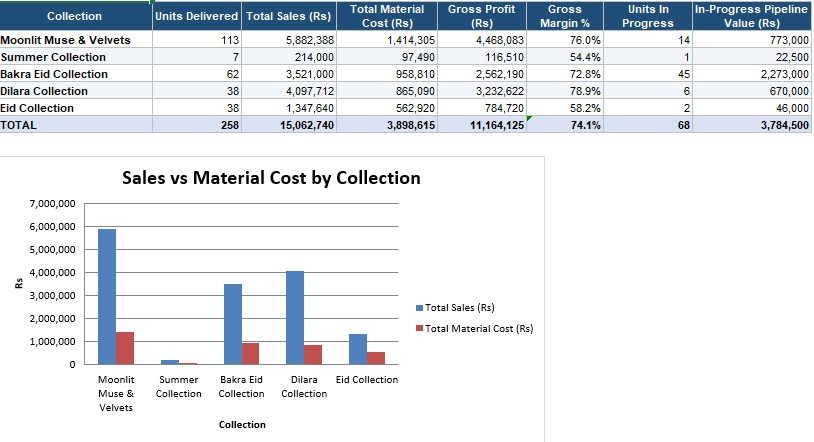
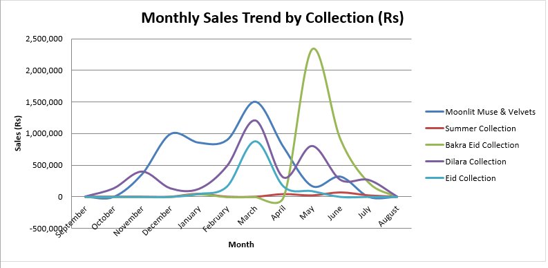

Clean books. Compliant returns. Smarter finance.
I'm an accountant with three years' experience supporting Australian businesses and accounting firms - from bookkeeping and payroll to BAS and tax return preparation - and I use AI to automate the repetitive work, build live dashboards and connect your CRM to your numbers.
Accounting expertise, multiplied by AI.
I don't just use the software - I build the systems around it. AI tools, including Claude Code, help me remove manual work, catch errors earlier and give owners numbers they can act on.
AI in accounting & finance
AI-assisted transaction coding, reconciliation checks, variance commentary and reporting - faster turnaround with a human review on every output.
CRM creation & integration
Setting up and connecting CRM and inventory platforms such as HubSpot and Cin7 so payments, stock and client activity flow into the ledger.
Dashboards & KPI reporting
Management dashboards and KPI packs in Excel and Google Sheets that surface cost-reduction opportunities and show performance at a glance.
Workflow automation
Automating recurring finance tasks - data capture, bank and supplier rules, checklists, report generation - and documenting them as repeatable SOPs.
Dashboards and a CRM, built for a real business.
Two systems I designed and built for a made-to-order fashion business: a reporting dashboard that shows which collections make money, and a job-tracking CRM that shows who is working on what. Client and staff details are removed.
Collection profitability dashboard
Sales, material costs and production were scattered across files. I consolidated them into one live report that answers the questions that matter: what sold, what it cost, what it earned and what is still in the pipeline.
- Rs 15.06M sales against Rs 3.90M material cost, a 74.1% gross margin across 258 delivered units.
- Margin by collection ranges from 54.4% to 78.9%, showing where pricing and fabric costs need attention.
- 68 units in progress worth Rs 3.78M, so upcoming revenue is visible before it is invoiced.
- Monthly sales trend by collection reveals seasonal peaks around Eid and winter.


Job tracker CRM
A lightweight CRM that follows every order from enquiry to delivery. It replaces chasing people for updates with a single view of status, workload and time against estimate.
- One row per order with customer, product, priority, assigned staff member and estimated hours.
- Automatic timing: time elapsed, total time and variance against the estimate are calculated for each job.
- On-track flag and status (not started, started, in progress, problem, completed) so delays surface early.
- Staff register and change log for hires, leave and exits, plus a live KPI dashboard of open jobs per person.
| Job ID | Order date | Product | Assigned to | Priority | Est. hrs | Status | On track? |
|---|---|---|---|---|---|---|---|
| JOB-0001 | 01 Aug | Bridal gown, hand-beaded | Staff 1 | High | 40 | Completed | Yes |
| JOB-0002 | 05 Aug | Bridesmaid dresses x6 | Staff 2 | Medium | 30 | In progress | Yes |
| JOB-0003 | 10 Aug | Evening gown, custom fit | Staff 3 | Medium | 18 | Started | Yes |
| JOB-0004 | 12 Aug | Formal gala dress | Staff 1 | Rush | 15 | Problem | At risk |
| JOB-0005 | 14 Aug | Cocktail dress | Staff 2 | Low | 10 | Not started | - |
Everything from onboarding to year-end.
I work in your own software through my own login, supporting Australian accounting firms and directly engaged businesses.
Bookkeeping & reconciliations
Monthly bank, credit card, supplier, debtor and balance sheet reconciliations in QuickBooks, Xero and MYOB.
Payroll & employee setup
Pay runs, STP Phase 2, superannuation and PAYG reconciled to the ledger via Xero, Employment Hero and Deputy.
BAS, IAS & tax returns
Activity statements and ITR, TTR and CTR returns prepared with full workpapers for the registered agent's review.
Tax workings
FBT, Division 7A, CGT, fuel tax credits, trust distributions, director's loans and Medicare levy.
Clean-up & catch-up
Clearing months of unreconciled transactions, duplicates, suspense balances and GST miscoding.
Dashboards, CRM & automation
P&L and balance sheet commentary, cash flow forecasts, dashboards, financial models and AI-driven workflows.
Three years across the full compliance cycle.
Independent Accountant & Bookkeeper
- Working independently with Australian clients, finding and winning new engagements through LinkedIn.
- Cleaning up Xero and QuickBooks Online files - clearing backlogs, fixing GST coding and correcting misallocations.
- Setting up and restructuring charts of accounts to suit each business.
- Preparing monthly financial reports and BAS from reconciled ledgers, ready for the registered agent's review and lodgment.
Tax Accountant
- Built complete financial statements and books of accounts for Australian entities in MYOB, QuickBooks and Xero, including chart of accounts design.
- Prepared quarterly BAS and IAS ahead of ATO deadlines, maintaining accurate statutory payment records.
- Prepared individual, trust, partnership and company tax computations at 95%+ accuracy, applying FBT, superannuation, Medicare levy and fuel tax credit rules.
- Managed asset acquisitions, disposals and depreciation schedules, keeping records audit-ready.
- Reconciled bank and ledger data to filings to isolate discrepancies before lodgment, liaising directly with Australia-based partners.
Finance Officer
- Ran bookkeeping, invoice processing and reconciliations for a 60+ entity portfolio in Xero, Dext, MYOB and Excel.
- Produced monthly financial summaries within 2-2.5% deviation; variance analysis led to reduced operating expenses and happier clients.
- Built financial dashboards and KPI reports giving leadership clear visibility of performance across the portfolio.
- Processed weekly, fortnightly and monthly payroll for 60+ client employees, reducing payroll errors.
- Integrated HubSpot, Cin7 and Coles Portal for payment tracking and inventory oversight; primary contact for client and leadership queries.
Depth in compliance, range in finance.
Software & tools
Entities & industries
Tax & compliance
Analysis & reporting
A five-day close you can set your watch by.
A repeatable month-end routine keeps owners informed and accountants out of last-minute scrambles.
Bank and card accounts reconciled; receipts inbox cleared.
Bills, invoices and payroll journals posted; accruals listed.
Balance sheet reconciled: GST, PAYG, super, wages clearing, loans.
P&L reviewed against prior periods; client queries sent in one list.
Management reports and cash flow issued; period locked.
Timing is adjusted to each client's volume and deadlines. I prepare the work; lodgment and representation remain with the client's registered tax agent. I sign a confidentiality agreement before access is granted and use two-factor authentication.